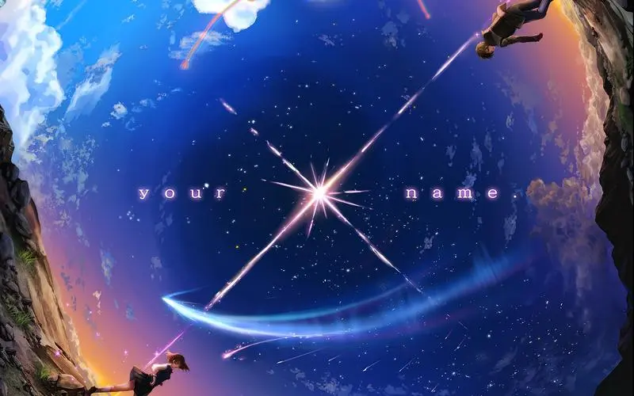
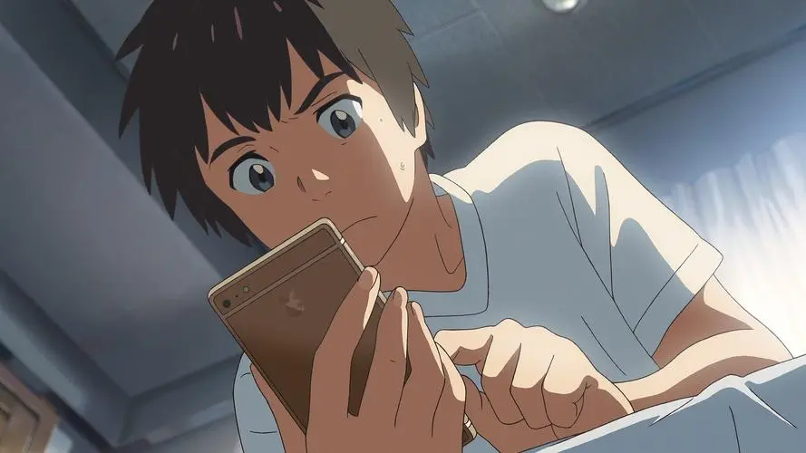
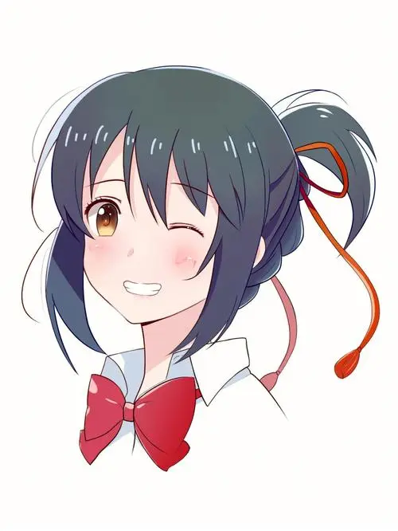

影片荣获第41届日本电影学院奖最佳动画长片奖。 故事讲述了主人公宫永和真是一个来自乡下的高中生，而主人公立花泷则是一个来自东京的高中女生。 两人在梦中相遇，并开始了一段互相梦见对方的奇妙经历。 他们意识到自己是在梦中互换身体，并开始尝试了解对方的生活。 在这个过程中，他们对彼此产生了感情，但是他们的梦境却在不断地缩短。
《你的名字》的创作背景是日本2011年的311大地震。导演新海诚在看到灾难后的日本社会的变化和人们对于生命和亲情的关注后，萌发了创作这部电影的想法。故事大概讲述了一对男女跨时空的爱恋吧。男主的名字是泷，女主的名字是三叶。开局就是男主女主的灵魂可以互换，简单来说就是男主一觉醒来变成了女主（身体互换）。而男主的身体则是被女主占据了（陷入沉思）男主起床，抬头看着陌生的天花板，身体变得怪怪的，下意识看着自己胸前的饱满，抚摸揉捏。没错，男主现在是女孩子的身体。就在男主揉捏胸部的时候，好巧不巧，一个小萝莉突然开门，看着男主不解的问道，姐姐你在干什么呢？还在因为自己变成女孩子而陷入迷茫，揉捏自己胸部的男主，用手指了指自己，差异的问道～姐姐？注意，然后下楼吃饭的时候，女主就恢复正常了，时间应该是第二天。女主是三叶，和奶奶妹妹住在一起，昨天三叶突然变得怪怪的，今天就恢复正常了（大概是这样……）
观影心得
结局是男主总是忍不住去看系守镇关于彗星的新闻～全员获救奇迹生还，系守镇镇长果断的命令影片最后，地铁上的男主，突然看见对面地铁的一个女孩，忍不住去追～“等一下……我好想曾经与你见过一面……”“我也是……”少女不知为何泪流满面。观后感（喂了这么多狗粮，最后连个吻都没有……没福利啊喂）然而结局，是很美好很甜的，大家都平安无事，即便泷与三叶将一切都遗忘，但是最终，还是相遇还是走在一起。